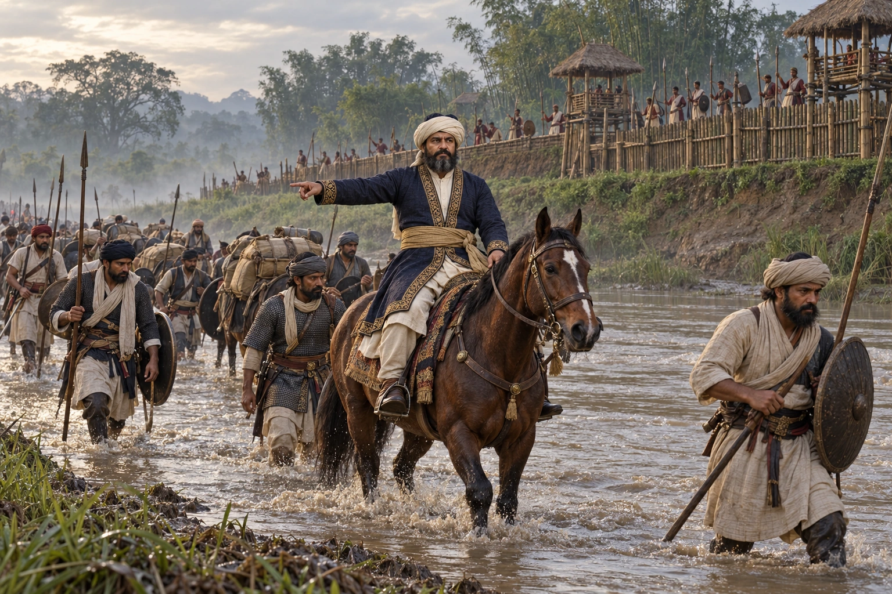

Kamata and the Ahoms Drive Back Azam Shah
1396–1400 · The coming of Sukaphaa

The Kamata king, allied with Sudangphaa by marriage, drives Ghiyasuddin Azam Shah of Bengal back across the Karatoya. A Boko inscription shows the Sultanate held part of Kamrup for some years.
Sudangphaa is not shown in battle.